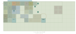

第二段階：可動廊下・省空間搬送 検証報告
検証日：2026年11月9日。対象は独立した tsugime-transport-lab の第二段階。第一段階はソースの stage1/ と、試用ページの「第一段階を比較」に保存。本編には統合していません。
結果と検証範囲
8搬送体・15基本チャンクを維持し、固定長廊下を廃止しました。居室前・店舗前・共同空間前の通路を全て可動建築に含め、EV乗場から複数搬送体の廊下を渡って移動します。A→B→C→Aは同じ個室・店舗・広間・可動廊下を使う連続移動です。
採用案は 49.2×24.4m・1搬送デッキ・協調搬送。必要離隔0.2mで3遷移の連続衝突検査を通過しました。全体を一旦遠方へ出す方式ではなく、循環待ちの一体だけを一時退避させて空いたドックを順に再利用します。条件を一回り・二回りに変更した案と、別高さへ退避する案も実装し、同じUIから再生できます。
自動テスト44件成功。3範囲×3方式×3遷移の27経路に加え、十分な空間による対照実験9経路、計36経路を検査しました。保存した第一段階の24テストも成功しています。実Three.jsメッシュの検査はCPUで行い、GPU描画器と文字テクスチャだけを代替しました。実ブラウザの3D表示・入力確認は接続障害により未確認です。
A. 建築の改修
外形と垂直構成
| 項目 | 第一段階 | 第二段階の採用案 | 高さ退避の比較案 |
|---|
| 基本外形 | 8×8×5m | 8×8×6m | 8×8×6m |
| 第二層床基準 | 0m | 0m | 0m |
| 搬送デッキ床基準 | 11m | 6.4m | 6.4m / 12.8m |
| 第三層床基準 | 24m | 12.8m | 19.2m |
| 第三層外形上端 | 29m | 18.8m | 25.2m |
| デッキ段数 | 1 | 1 | 2 |
高さを1m（20%）増やし、個室を高天井にする代わりに、共同広間を5.4mまで高くしました。採用案は下層0〜6m、搬送層6.4〜12.4m、上層12.8〜18.8mを占有し、各層に0.4mの上下余裕を確保します。生活階間隔は24mから12.8mに縮小しました。
床厚0.16mは外形内に収めます。室内高は床面から天井下面までの値です。上部の未使用空間は低い天井板と、その上の構造・設備用プレンナムとして扱い、身体の利用空間に数えません。外形全体は高さ6mの搬送占有体積です。
内部空間
以下は壁仕上げを含む概略の有効寸法で、家具を除く値です。部屋を外形いっぱいまで広げる構成にはしていません。
| 搬送体 | 恒久連結数 | 内部の大きさ・構成 | 室内高 |
|---|
| R1 | 1 | 個室301 約6.7×3.9m、前廊下、幅1.2mの設備帯、背面構造帯 | 個室2.6m / 廊下2.3m |
| R2 | 1 | 約2.5×4.6mの簡易部屋3室、東西廊下。2号室施錠、3号室観察窓 | 部屋2.4m / 廊下2.3m |
| R3 | 1 | 個室201 約5.9×4.9m、約1.56m幅の細廊下、2m幅設備帯 | 個室2.65m / 廊下2.3m |
| R4 | 1 | 小居室 約4.4×3.5m、前廊下、背面と右の厚い構造帯 | 2.25m |
| T1 | 2 | 16m間口の開放店舗、2.8m開口の前通路、売場 | 通路3.0m / 売場3.8m |
| T2 | 2 | 小売店・設備庫・普通扉で入る奥店舗、連続する前通路 | 通路2.8m / 西店舗3.0m / 奥3.4m |
| H1 | 4 | 約15.8×15.8mの共同広間、幅広の東西共用通路 | 5.4m |
| L1 | 3 | L字集会室・可動通路・45度区間・休憩翼。欠けた1セルには床も屋根もない | 前部4.5m / 翼3.2m |
廊下を含む搬送体は8種類です。R1〜R4は部屋と廊下を同じ1セルに収め、T1/T2/H1/L1も前通路ごと移動します。違う高さの天井同士の境目には垂直の見切り壁を設け、プレンナムが露出する隙間を塞いでいます。全壁厚・シャッター枠・巻取り状態を含め、実メッシュが各搬送体のセル和集合内に収まることを検査しました。
B. 通路網と空欄
固定通路の縮小
第一段階の固定回廊は各階50×4m、2階合計400㎡でした。今回は各階2×4mのEV乗場のみ、合計16㎡に縮小しました。固定通路面積は96%減です。別に固定観察室16㎡とEV本体が残ります。固定観察室は主経路の迂回路にはなりません。
固定乗場と最初の可動廊下の間、搬送体同士、観察室との間には0.4mの継手があります。通行可能時だけ床橋を展開し、搬送前に格納します。継手をまたぐ身体は閉鎖を待ちます。橋は搬送中の外形へ張り出したまま残りません。
各周期
| 周期 | 第三層 西→東 | 第二層 西→東 | 通路の変化 |
|---|
| A | R1→R2→T1→H1 | R3→R4→T2→L1 | 両階とも長い可動廊下が連続。8/8搬送体へ到達 |
| B | R3→R1→T2 / L1は後方 | R4→R2→T1→H1→観察室 | 第三層のL1がZ=8.4へ移動。旧通路終端が閉じ、L1は孤立。第二層の観察室へ新規到達 |
| C | R2→R4→T1→L1 | R1→R3→T2 / H1は後方 | 第三層L1が再接続。第二層H1がZ=8.4へ移動して孤立。観察室への経路も消える |
B・Cはそれぞれ7/8搬送体へ到達可能です。孤立したL1は次のC、孤立したH1は次のAで実搬送により再接続します。観察室はBだけで接続するため、CからBへ戻るにはC→A→Bの2遷移が必要です。
Aの第三層では固定乗場からH1の東端近くまで歩けますが、Bでは同じ廊下がT2の東口で行き止まりになります。この経路の長さの変化を実際の衝突付き歩行で検証しました。通路網の大半を固定回廊で支える構造は残していません。
空欄の意味
空きドックは 搬送井・床なし です。外形矩形から実際のセル床の和集合を引いた領域をデータ化します。幅0.4mなどの隙間は機械離隔域、広い空欄は搬送井として区別します。橋が展開される部分だけ例外的に床支持を与えます。
Bの第三層・Cの第二層には、以前通路を構成していた終端搬送体のいないドックが現れます。シャッターを閉じ、床支持を削除します。地図に床なしを表示するだけでなく、実メッシュへの下向きレイでも、その位置に見えない床がないことを確認しました。
C. 搬送方式
第1・第2工程：建築改修と十分な空間での成立確認
改修した建築を66×49.6mの十分な搬送範囲で先に検査しました。順次方式でA→B→C→Aが全て成立し、建築・目標配置そのものと省空間化の問題を切り分けています。対照結果は comparisons.json の baselineWithGenerousSpace に保存しました。
方式A：空欄の順次再利用
R1〜R4、T1/T2、H1/L1を、それぞれドック寸法の互換群として扱います。移動先が空いている体から昇降・横行・着床します。循環待ちになった場合だけ一体をデッキ上の待機位置へ出し、空いたドックから循環を解きます。全8体を一括で遠方へ避難させません。
経路は障害物の境界と範囲端を候補とする軸方向の可視グラフで探索し、各辺を外形全体で連続検査します。L字は16×16mの大きな箱に潰さず、3つの8×8×6mセルの和集合を使います。回転は使用しません。
方式B：協調移動
同程度の平面では、R群とT群を離れたX帯で並行運転します。大型群が西の後方へ一時退避する工程は、それらが終わってから行います。最大2体が同時に動きます。
一回り拡張すると大型群の待機を東南隅（X=41.6、Z=16.8）へ移せるため、3群を並行運転できます。L1の欠けた後方東セルの空間を使い、H1との間に0.4mの隙間を残します。形状の凹部がこの計画の成立条件です。単なる16×16mの箱同士を同じ場所へ置いているわけではありません。
方式C：高さ退避
大型群だけ第2デッキY=12.8mへ一時退避し、R/T群を第1デッキY=6.4mで運転します。大型群が西へ横行する前に後方Z=8.4へ下がるため、前部Z=0〜8mにあるR/Tの昇降井を塞ぎません。最大3体を同時運転できます。
その代わり第三層をY=19.2mへ上げ、上端25.2mが必要です。採用案の18.8mに対して高さは約34%増えます。平面だけを見て省空間とせず、この高さの費用を比較しています。1デッキで成立するため、標準動作には2段案を採用していません。
採用案の各遷移
| 遷移 | 区間数 | 全外形の連続検査 | 移動秒 | 最大同時 | 離隔違反 |
|---|
| A→B | 22 | 962 | 56.9 | 2 | 0 |
| B→C | 26 | 1004 | 46.6 | 2 | 0 |
| C→A | 19 | 612 | 52.7 | 1 | 0 |
順序は5秒の退避警告→シャッター閉鎖・継手格納1.5秒→上記の搬送→着床・継手展開・開放1.3秒です。表の時間に警告と開閉を含めません。既定の2倍速は実験時間を半分にします。
占有と検査
最低離隔は0.2m。別搬送体のセル外形・固定EV・乗場・観察室に対し、相対運動の連続slab判定を行います。同時移動区間を開始・終了時刻で分割し、全ての途中時間での干渉を調べます。軸方向の区間なので、固定物への掃引AABB判定も連続的に成立します。
実メッシュでも、壁厚・シャッター枠・天井見切り・巻取りが外形内であることを検査しました。採用案の全掃引外形は、描画に使う実際の外壁・天井・ガイド支柱・乗場機器・停止中EVにも0.2mの離隔で干渉しません。格子や経路線、文字ラベルは物理障害物には数えません。
成立しない対照例
• 水平退避なしの上下入替：開始・終点だけは空いて見えても、途中で同じ昇降井を2体が占有するため拒否しました。
• 0.1mしか空かない経路：ゼロクリアランス検査では通っても、今回の0.2m検査では拒否するテストを用意しました。
• 幅15mの許可範囲：幅16mの恒久連結搬送体が収まらず不成立。範囲外の待機位置を成功扱いしません。
これらは失敗原因を確認する対照試験です。標準の9条件が失敗したかのようには扱いません。
D. 搬送空間の縮小比較
面積の定義
基準は 3周期で共通に使用する可動生活域の外接矩形49.2×24.4m＝1200.48㎡ です。A単独の外接矩形49.2×16m＝787.2㎡に対しては、採用案の許可範囲は約1.53倍になります。最大の単層実セル床面積512㎡に対しては約2.34倍です。「生活域と同程度」は外接矩形規格の比較であり、実際の部屋床面積と同じ面積を意味しません。
固定EV・乗場・観察室と外周ガイドはこの可動許可矩形の外に別途確保しています。全比較で同じ設備を持ちます。建築や目標XY配置を比較ごとに変形していません。2段案だけは高さの費用を評価するため、上層Yを6.4m高くします。XY配置と所属階の目標は共通です。
結果表
各行は3遷移を循環させた合計です。「上端/段」は第三層外形上端mと搬送デッキ数。「循環区間」は同時工程の時刻分割後の区間数なので、単純な搬送体の移動回数とは異なります。
| 条件 | 搬送 | 幅×奥行m | 平面㎡ | 面積比 | 上端m / 段 | 循環区間 | 循環秒 | 最大同時 |
|---|
| 同程度 / 順次・空欄再利用 | 成功 | 49.2×24.4 | 1200.48 | 1.00 | 18.8 / 1 | 74 | 181.7 | 1 |
| 同程度 / 協調・1デッキ | 成功 | 49.2×24.4 | 1200.48 | 1.00 | 18.8 / 1 | 67 | 156.2 | 2 |
| 同程度 / 高さ退避・2デッキ | 成功 | 49.2×24.4 | 1200.48 | 1.00 | 25.2 / 2 | 65 | 112.1 | 3 |
| 一回り / 順次・空欄再利用 | 成功 | 57.6×32.8 | 1889.28 | 1.57 | 18.8 / 1 | 76 | 165.3 | 1 |
| 一回り / 協調・1デッキ | 成功 | 57.6×32.8 | 1889.28 | 1.57 | 18.8 / 1 | 57 | 84.8 | 3 |
| 一回り / 高さ退避・2デッキ | 成功 | 57.6×32.8 | 1889.28 | 1.57 | 25.2 / 2 | 65 | 112.1 | 3 |
| 二回り / 順次・空欄再利用 | 成功 | 66×41.2 | 2719.20 | 2.27 | 18.8 / 1 | 76 | 165.3 | 1 |
| 二回り / 協調・1デッキ | 成功 | 66×41.2 | 2719.20 | 2.27 | 18.8 / 1 | 57 | 84.8 | 3 |
| 二回り / 高さ退避・2デッキ | 成功 | 66×41.2 | 2719.20 | 2.27 | 25.2 / 2 | 65 | 112.1 | 3 |
全行で0.2m離隔の検査に成功。一回り・二回りとも追加幅・奥行は8.4m刻みです。二回り案は一回り案と同じ有効な待機位置を利用し、この計画では時間短縮になりませんでした。追加面積を無条件に有利とは扱いません。
必要な待機位置と費用
• 同程度1段：小型群はX=0または16.8、Z=8.4の8m角待機位置。大型群はX=0、Z=8.4の16×16m待機位置を、他群完了後に再利用します。Z=64や40の遠方ベイは不要です。
• 一回り1段：大型群をX=41.6、Z=16.8の東南隅へ退避でき、他群と並行運転。L字の凹部と離隔を使うため、形状が違えば成立を再検証する必要があります。
• 同程度2段：大型待機位置はX=0、Z=8.4、Y=12.8m。平面は増やさず並行運転できる一方、全層の高さが6.4m増えます。
採用は同程度・1段協調です。面積と高さを最優先し、最大同時2体を受け入れます。搬送時間を重視する場合の比較案は一回り・1段協調です。高さ退避案は研究用として残しました。
第一段階の搬送平面48×80m＝3840㎡に対して、採用案の許可面積は約31.3%（約68.7%減）。上端も29mから18.8mへ縮小しました。ただし建築の内部構成・目標の通路網・速度設定も改修しているため、第一段階との秒数比較を同条件の性能評価には使いません。第二段階の9条件間では速度・建築・目標を共通にしています。
E. 到達可能性・退避・未解決事項
孤立と退避
通常は孤立予定区画への新規入場を制限し、在室中なら搬送を待ちます。固定観察室からの退出では、同時に閉鎖予定のH1を通って安全なT1へ退避する必要があります。そのため、既に閉鎖予定区画にいる人の退避は通し、安全区画へ出た後の再入場は制限します。この複数区画を通る退避もテストしました。
意図的な孤立は明示スイッチで別扱いにします。L1はA→Bで孤立してB→Cで再接続、H1はB→Cで孤立してC→Aで再接続。在室者は同じローカル座標を保ちます。固定観察室の在室者は動かず、B→Cの閉鎖前には通常退避を要求します。実験モードで残る場合の再接続はBまでの2遷移です。
デバッグ復帰は第三層のEV乗場への明示的な瞬間復帰で、物理的出口の証明には使いません。次周期の開始ボタンも開発用の全域制御であり、本編の住人がどう搬送を要求するかは決定していません。永久的な搬送停止時の救出路は未実装です。
今回の限界
• 互換寸法の3群という構造を利用した計画です。任意の搬送体配置・回転・新しい凹凸形状の全自動搬送を証明しません。
• 可視グラフの候補と一時退避位置は、この8体の実験に合わせています。最小面積・最短時間の最適性の証明ではありません。もっと小さい不整形許可範囲は未探索です。
• 同じデッキでの複雑なすれ違いは、経路予約や群分割で避けています。最大2〜3体の協調を検証しましたが、全8体同時や一般の多体交通は未検証です。
• L字の欠けた1セルは実際に空ですが、内部の低天井空間や設備庫の空気を他の搬送体が通ることは認めません。外形は全て占有します。
• 機械離隔0.2mとドック隙間0.4mは仮設定です。公差、たわみ、停止精度、荷重、加速度、制動、振動、支持機構、着床ロック、格納橋の製作可能性は未検証です。
• 低天井より上の設備空間は確保しましたが、給排水・空調・電源継手の実装や法規・避難計画は未検証です。
• プレイヤー1人・固定EV1系統。多人数の退避完了、複数EV、事故時の制御は未実装です。
• 永続セーブはなく、条件変更とリセットは実験用初期化です。通常搬送と区別します。
ブラウザ確認の制約
管理プレビューは relay could not open browser port 4173: timed out waiting for relay readiness により開始できませんでした。共有ChromeのURL移動も Browser Use could not read requirements で失敗。デスクトップ側の代替入力では AT-SPI provider ... is unavailable となり、ページを開けませんでした。
したがって、実際のWebGLコンテキスト、画面の見え方、ブラウザ入力、スマートフォン実機の操作感は未確認です。実3D画面を確認したという報告やスクリーンショットは添付しません。CPUの実メッシュ生成・レイ判定・幾何到達探索と、実ブラウザの描画確認を分けています。
再現用の資料
• 3方式・3範囲の比較データ
• 比較表の図
• 採用した3遷移の全工程・座標
• 通路・孤立・空欄データ
• 不成立の対照例
• テスト出力
• 第一段階の回帰出力
地図は3Dと同じ建築データから生成しています。UIの配置計画A/B/Cは比較用で、実配置を書き換えません。以下の図面と、試用ページの搬送デッキ表示から経路と途中占有を確認できます。
搬送範囲・方式の比較図

各周期の平面図
周期 A
第3層 第2層
第2層
周期 B
第3層 第2層
第2層
周期 C
第3層 第2層
第2層
専用デッキと搬送経路
